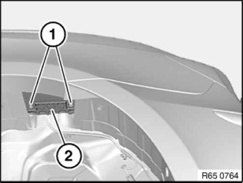
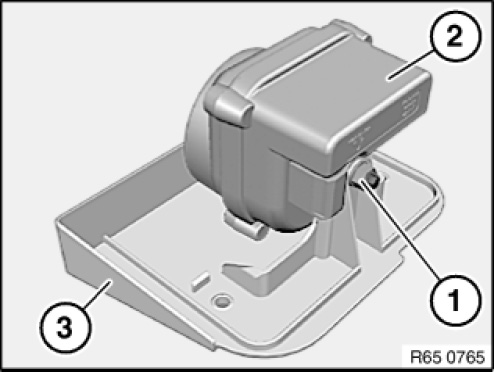

Tow Sensor: Service and Repair
65 75 055 Removing And Installing/replacing Emergency Power Siren With Tilt Sensor

Necessary preliminary tasks:
- Remove rear left wheel arch panel

Undo screws (1) on the rear left wheel arch and lower mounting plate (2).
Unlock and disconnect accompanying plug connection and remove mounting plate (2).

Release nut (1) and remove emergency power siren with tilt sensor (2) from mounting plate (3).

Replacement:
Carry out vehicle programming/encoding.